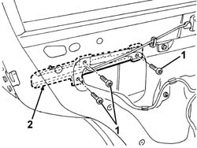

7010E93 partition on rear door, lh or rh - r r with door panel removed
- Path
- Procedures > 70 FITTINGS > 7010 PASSENGER COMPARTMENT REAR SIDE DOORS > 7010E rear side door trim > 7010E93 partition on rear door, lh or rh - r r with door panel removed
- Kind
- repair procedure (removal / refitting; the operation number is the code)
- Applies to
- all engines; all production periods
- Interactive page
- https://sloeber94.github.io/elrnDB-a147/en/#/3025722
Applies to: all engines; all production periods
 Removing
Removing
 Refitting
Refitting5570T96 rear side speaker - r r
7010A04 rear side door water guard protection - r r or arrange with door panel removed
1. With the window fully raised, undo the bolts fixing the anti-intrusion panel.
2. Remove the anti-intrusion panel.

Applies to: all engines; all production periods
Refitting
RemovingCheck that the anti-intrusion panel is intact and not torn.
Position the anti-intrusion panel.
Tighten the screws.
7010A04 rear side door water guard protection - r r or arrange with door panel removed
Topics linked from this page (2)
- 5570T96 rear side speaker - r r
- 7010A04 rear side door water guard protection - r r or arrange with door panel removed
Topics that link to this page (7)
- 7010C51 rear side door inner catch return device - r+r for repair or replacement
- 7010C64 handle link yo lock - r r
- 7010C65 handle link to lock - r r
- 7010D22 rear side door descending window glass guide (one) - r r with door panel (and support frame) removed
- 7010N20 rear side door lock motor/catch assembly - r r with door panel and support frame removed
- 7010N21 rear side door lock motor-lock assembly r r
- 7205E38 Stripping REAR SIDE DOOR